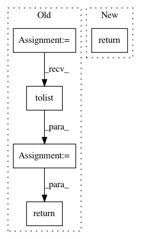

e5e0e56297fa91237ca1826071e2df5caaa1f219,dython/sampling.py,,weighted_sampling,#,9
Before Change
with_replacement : Boolean, default = False
Allow replacement or not
sampled = np.random.choice(numbers, size=k, replace=with_replacement)
if (isinstance(numbers, list)
or kwargs.get("to_list", False)) and k is not None:
sampled = sampled.tolist()
return sampled
def boltzmann_sampling(numbers, k=1, with_replacement=False):
After Change
--------
List, np.ndarray or a single number (depending on the input)
return _w_sampling(numbers, k, with_replacement, force_to_list=False)
def boltzmann_sampling(numbers, k=1, with_replacement=False):
In pattern: SUPERPATTERN
Frequency: 3
Non-data size: 5
Instances
Project Name: shakedzy/dython
Commit Name: e5e0e56297fa91237ca1826071e2df5caaa1f219
Time: 2020-04-17
Author: shakedzy@gmail.com
File Name: dython/sampling.py
Class Name:
Method Name: weighted_sampling
Project Name: robertmartin8/PyPortfolioOpt
Commit Name: 70b08e1d2e703b4e3d16da9aaa04706dd4413232
Time: 2020-05-01
Author: thomas.schmlezer@gmail.com
File Name: pypfopt/hierarchical_portfolio.py
Class Name: HRPOpt
Method Name: _get_quasi_diag
Project Name: robertmartin8/PyPortfolioOpt
Commit Name: 5e56bcc41a7d147c710e57c4c764651c7e148581
Time: 2020-04-30
Author: thomas.schmlezer@gmail.com
File Name: pypfopt/hierarchical_portfolio.py
Class Name: HRPOpt
Method Name: _get_quasi_diag